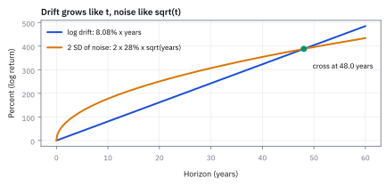
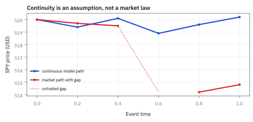

10.1 Three Defining Properties of Brownian Motion
สุ่มทีละขั้น แต่รูปแบบรวมมีสามกติกาที่ตรวจสอบได้
กองทุนถือหุ้น SPY ที่ราคา \$520 หาก drift ต่อปีคือ 8% และ volatility คือ 18% ต่อปี โดยหนึ่งปีมี 252 วันทำการ วันละ 390 นาที ในช่วงเวลา 30 นาทีข้างหน้า ราคามีโอกาสแกว่งในกรอบ 95% ประมาณกี่ดอลลาร์?
เฉลย: กรอบ 95% คือ [-\$3.19, +\$3.22] รอบราคาเดิม โดย mean ขยับขึ้นเพียง \$0.013 แต่ความผันผวนกว้างถึง \$1.64 เพราะความเสี่ยงโตตามรากของเวลา
ศัพท์ที่ใช้ในหัวข้อนี้
- Brownian motion
- stochastic process เวลาต่อเนื่องที่มี increments อิสระและเป็น Normal ตามความยาวของช่วง พร้อม sample paths ที่ต่อเนื่อง ใช้เป็นแหล่ง randomness พื้นฐานของ model ราคาและ risk
- Wiener process
- ชื่อทางคณิตศาสตร์อีกชื่อของ Brownian motion โดยเฉพาะกรณีมาตรฐาน ใช้เน้นว่ากำลังพูดถึง process ทั้งเส้นทาง ไม่ใช่ random variable จุดเดียว
- stochastic process
- ครอบครัวของ random variables ที่มีดัชนีเป็นเวลา ใช้แทนสิ่งที่คลี่ออกทีละขณะ เช่น ราคา ผลตอบแทนสะสม หรือ risk factor
- random walk
- process เวลาไม่ต่อเนื่องที่สะสมก้าวสุ่มทีละขั้น ใช้เป็นแบบจำลองตั้งต้นและเป็นเส้นทางประมาณ Brownian motion เมื่อย่อช่วงเวลา
- increment
- ผลต่างของ process ระหว่างเวลาเริ่มกับเวลาสิ้นสุด ใช้วัดการเปลี่ยนแปลงในช่วงนั้นโดยไม่สนใจระดับก่อนเริ่มช่วง
- Normal distribution
- distribution รูประฆังที่กำหนดด้วย mean และ variance ใช้ระบุโอกาสของ Brownian increment แต่เป็นเพียง approximation สำหรับผลตอบแทนตลาดจริงที่มี fat tails
- variance
- expected squared distance จาก mean ใช้วัดการกระจายที่บวกกันได้สำหรับ independent increments และเป็นฐานของ risk aggregation
- standard deviation
- square root ของ variance ซึ่งกลับมาอยู่หน่วยเดียวกับตัวแปร ใช้รายงาน volatility และกรอบความเสี่ยงที่ตีความได้
- covariance
- expected product ของ deviations ของตัวแปรคู่หนึ่ง ใช้วัดการขยับร่วมและเป็นพจน์ที่ต้องรวมเมื่อ increments ไม่ independent
- correlation
- covariance ที่ปรับด้วย standard deviations จนไม่มีหน่วย ใช้ตรวจความสัมพันธ์ของ increments ข้ามช่วงเวลา
- independence
- เงื่อนไขที่การรู้ outcome ของตัวแปรหนึ่งไม่เปลี่ยน distribution ของอีกตัว ใช้ตัด covariance terms ออกจาก variance ของผลรวม
- random variable
- ตัวเลขที่ outcome ยังไม่แน่นอนแต่มี probability distribution กำกับ ใช้แทน increment หรือราคาปลายทางก่อนสังเกตจริง
- quantile
- จุดตัดของ distribution ที่สะสมโอกาสถึงระดับกำหนด ใช้สร้างกรอบเช่นช่วง Normal 95%
- drift
- อัตราการเปลี่ยนแปลงเฉลี่ยต่อหน่วยเวลา ใช้กำหนดแนวโน้มของ mean โดยไม่บอกทิศทางของ sample path แต่ละเส้น
- volatility
- standard deviation ของการเปลี่ยนแปลงเมื่อปรับให้อยู่บนหน่วยเวลาที่กำหนด ใช้วัดความผันผวน ไม่ใช่ทิศทาง
สัญลักษณ์ที่ใช้ในหัวข้อนี้
| สัญลักษณ์ | ความหมาย | หน่วย |
|---|---|---|
| $B_t$ | standard Brownian motion ที่เวลา $t$ โดยกำหนด $B_0=0$ | $\sqrt{\mathrm{time}}$ |
| $B_{t+s}-B_t$ | increment ตลอดช่วงจาก $t$ ถึง $t+s$ | $\sqrt{\mathrm{time}}$ |
| $t,s$ | เวลาเริ่มและความยาวของช่วง โดย $t,s\ge0$ | ปีหรือหน่วยเวลาที่เลือก |
| $\mu$ | drift ของ process ที่มีหน่วยจริง เช่น $X_t$ ต่อหนึ่งหน่วยเวลา | หน่วยของ $X$ ต่อเวลา |
| $\sigma$ | volatility scale ของ process ที่มีหน่วยจริง เช่น $X_t$ | หน่วยของ $X$ ต่อ $\sqrt{\mathrm{time}}$ |
| $\Delta t$ | ความยาวของช่วงย่อยหนึ่งช่วง | เวลา |
| $Z$ | standard Normal random variable ที่มี mean 0 และ variance 1 | ไม่มีหน่วย |
ที่มาที่ไป: ละอองเกสรในน้ำ ที่กลายเป็นแบบจำลองราคาหุ้น
ในปี 1827 นักพฤกษศาสตร์ชื่อ Robert Brown ส่องกล้องดูละอองเกสรในน้ำ แล้วเห็นมันสั่นไปมาไม่หยุด โดยไม่มีใครอธิบายได้ว่าทำไม
คำอธิบายมาในปี 1905 จาก Albert Einstein ซึ่งชี้ว่าเกิดจากโมเลกุลน้ำชนละอองนั้นจากทุกทิศ และในปี 1923 Norbert Wiener สร้างวัตถุทางคณิตศาสตร์ที่รัดกุมขึ้นมารองรับ
แต่ที่น่าสนใจคือ Louis Bachelier เอาความคิดนี้ไปใช้กับราคาหุ้นตั้งแต่ปี 1900 ก่อนที่ Einstein จะอธิบายปรากฏการณ์ทางฟิสิกส์เสียอีก
หัวข้อนี้จึงย้อนกลับไปที่กติกาสามข้อที่นิยามการเคลื่อนที่แบบนั้น ซึ่งเป็นฐานของทุกอย่างในครึ่งหลังของเล่ม
เริ่มที่สิ่งที่ model ต้องตอบ
ให้ $B_0=0$ และให้ $B$ เป็น standard Brownian motion: มันไม่ใช่คำกล่าวว่าราคาตลาดเป็นระฆังสมบูรณ์แบบ แต่เป็น benchmark ที่ตอบสามคำถามให้ชัด: ช่วงที่ไม่ทับกันเกี่ยวกันหรือไม่, increment กระจายอย่างไร, และ path กระโดดได้หรือไม่
ขั้นที่ 1 — สมบัติที่ 1 — increments ในช่วงไม่ทับกันเป็นอิสระ
Brownian motion ถูกนิยามด้วยกติกาสามข้อ ไม่มากไปกว่านี้ ข้อแรกบอกว่าช่วงเวลาที่ไม่ทับกันต้องไม่บอกอะไรเกี่ยวกันเลย นี่คือข้อที่ทำให้ 'ดูกราฟย้อนหลังแล้วทายอนาคต' ใช้ไม่ได้
$t_0$ ถึง $t_n$ คือขอบช่วงที่เรียงตามเวลา และ $B_{t_i}-B_{t_{i-1}}$ คือ increment ของช่วงที่ $i$; independence ทำให้ข้อมูลจากช่วงหนึ่งไม่เปลี่ยน distribution ของ increment ในอีกช่วงที่ไม่ทับกัน
สมบัติที่ 2 — นิยามข้อที่สอง: distribution ขึ้นกับความยาวช่วงเท่านั้น
สมบัติข้อที่สองระบุว่าการเปลี่ยนแปลงขึ้นกับความยาวของช่วงเวลาเท่านั้น ไม่ขึ้นกับว่าเริ่มจับเวลาตอนไหน ครึ่งชั่วโมงช่วงเช้ากับครึ่งชั่วโมงช่วงบ่ายจึงใช้การกระจายตัวแบบเดียวกัน สำหรับ process ทั่วไปที่มี drift และ volatility จะเขียนเป็น $X_{t+s}-X_t \sim N(\mu s, \sigma^2 s)$
$B_{t+s}-B_t$ คือ increment ของ standard Brownian motion ยาว $s$; mean เป็นศูนย์และ variance เท่ากับ $s$ โดยไม่ขึ้นกับตำแหน่งเริ่ม $t$ จึงเรียกว่า stationary increments; เมื่อใส่ drift $\mu$ และ volatility $\sigma$ การกระจายจะขยายเป็น mean $\mu s$ และ variance $\sigma^2 s$
สมบัติที่ 3 — sample path ต่อเนื่อง
ข้อที่สามบังคับว่าเส้นทางห้ามกระโดด ราคาจะข้ามจากค่าหนึ่งไปอีกค่าโดยไม่ผ่านค่าระหว่างกลางไม่ได้ ข้อนี้คือสิ่งที่ทำให้ hedge แบบต่อเนื่องพอจะเป็นไปได้ในทฤษฎี
probability 1 หมายถึงแทบทุก sample path ต่อเนื่องตามเวลา: ถ้าเส้นทางเดินทางจากค่าหนึ่งไปสู่อีกค่าหนึ่ง ต้องผ่านทุกค่าระหว่างกลางเสมอ แต่ไม่ได้แปลว่าเส้นทางจะเรียบหรือหา derivative ได้
ทำไมต้องเป็นระฆังคว่ำ — ไม่ได้เลือกเอง แต่ถูกบังคับ
นี่คือเหตุผลที่ลองใช้ distribution อื่นแล้วไม่รอด ถ้าให้การขยับหนึ่งวินาทีเป็นแบบ uniform ผลบวกของสองวินาทีจะไม่ใช่ uniform อีกต่อไป ซึ่งขัดกับสมบัติข้อ 2 ที่บอกว่า รูปร่างต้องขึ้นกับความยาวช่วงอย่างเดียว ระฆังคว่ำเป็นตระกูลที่บวกกันแล้วยังเป็นตัวเองอยู่ จึงเป็นตัวเดียวที่อยู่รอดในกรอบนี้
คำถามที่ควรถามหลังอ่านสมบัติข้อสองคือ ทำไมต้องระฆังคว่ำ ใครเลือกให้ คำตอบคือไม่มีใครเลือก พอตั้งสมบัติข้อ 1 กับข้อ 2 ไว้แล้ว รูปร่างนี้ไม่มีทางเป็นอย่างอื่น
วิธีเห็นคือหั่นช่วงเวลาออกเป็น $n$ ท่อนเท่า ๆ กัน การขยับตลอดช่วงก็คือผลบวกของการขยับย่อย ท่อนย่อยเหล่านี้เป็นอิสระต่อกันตามข้อ 1 และหน้าตาเหมือนกันหมดตามข้อ 2
จังหวะชี้ขาดอยู่ที่บรรทัดรองสุดท้าย ผลบวกของของเล็ก ๆ ที่เป็นอิสระและเหมือนกันจำนวนมาก ลู่เข้าหาระฆังคว่ำเสมอ ซึ่งคือ Central Limit Theorem ของหัวข้อ 14.2
แต่ผลบวกก้อนนั้นไม่ได้แค่ลู่เข้า มันเท่ากับการขยับตลอดช่วงพอดีอยู่แล้ว ไม่ว่าจะหั่นกี่ท่อน ของที่เท่ากับปลายทางของตัวเองอยู่ทุกขั้น ก็ต้องเป็นปลายทางนั้นมาตั้งแต่ต้น
แล้วเอาไปใช้ทำอะไรได้จริงบ้าง
สามกติกาของ random walk ต่อเนื่อง เป็นฐานของแบบจำลองราคาทุกตัวในครึ่งหลังของเล่ม
ใช้แปลงความเสี่ยงข้ามช่วงเวลา ด้วยกฎรากที่สอง ซึ่งเป็นการคำนวณที่ทำทุกวันในทุกทีม
ใช้สร้างกรอบว่าราคาน่าจะอยู่ในช่วงไหนใน 30 นาทีข้างหน้า ซึ่งใช้ตั้งเกณฑ์เตือนของระบบเทรด
ใช้เป็นข้อสมมติตั้งต้นของสูตรตั้งราคา option ที่จะสร้างในหัวข้อ 13.2 (Black-Scholes) และของแบบจำลองความเสี่ยงเกือบทั้งหมด
Figure 10.1a — หนึ่งเส้นทาง กับสามสมบัติที่นิยามมัน

เส้นเดียวสรุปนิยาม: path ต่อเนื่อง ไม่มีเส้นตั้งกระโดด; หน้าต่างสีสองช่วงไม่ทับกันจึงมี increments อิสระ; ความกว้างเชิงสถิติของ increment ถูกกำหนดด้วยความยาวหน้าต่าง
ทำไมความเสี่ยงโตตาม square-root-of-time
แบ่ง horizon ยาว s เป็น n ช่วงเท่ากัน แต่ละช่วงของ standard Brownian motion มี variance เท่ากับความยาวช่วงและเป็นอิสระ สมบัติข้อแรกจึงอนุญาตให้บวก variances ได้โดยไม่มี covariance terms; ถ้าสร้าง process ที่ scale ด้วย sigma ค่อยคูณ variance ทั้งก้อนด้วย sigma squared
ขั้นที่ 2 — บวก variance ของช่วงย่อย
สามกติกาข้างบนพอแล้วที่จะคำนวณว่าความไม่แน่นอนสะสมอย่างไร สูตรข้างล่างใช้สองในสามข้อ และผลที่ได้ไม่ขึ้นกับ $n$ เลย ถ้ามันขึ้นกับ $n$ แปลว่ากติกาสามข้อขัดกันเอง
ลองซอยช่วงยาวเป็น $n$ ท่อนเท่า ๆ กัน แล้วบวกกลับ พจน์กลางหักกันหมดเหลือหัวกับท้าย จึงเป็นการเขียนใหม่ ไม่ใช่การประมาณ ท่อนสั้นแต่ละท่อนยาว $s/n$ จึงมี variance เท่ากับความยาวของตัวเองตามสมบัติที่ 2
บรรทัดที่สี่ถึงหกคือที่ที่สมบัติข้อแรกทำงาน: ช่วงที่ไม่ทับกันเป็นอิสระต่อกัน variance จึงบวกกันได้ตามหัวข้อ 6.5 ถ้าไม่มีข้อนี้จะมีพจน์ไขว้ค้างอยู่ พอบวก $n$ ก้อนที่เท่ากัน $n$ ก็ตัดกันพอดี เหลือ $s$
สังเกตว่าคำตอบไม่มี $n$ อยู่เลย ซอยละเอียดแค่ไหนก็ได้เท่าเดิม นั่นคือข้อพิสูจน์ว่าสามกติกาเข้ากันได้ และความไม่แน่นอนสะสมตามเวลาแบบตรง ๆ
ขั้นที่ 3 — ถอด standard deviation ออกจาก variance
variance มีหน่วยเป็นกำลังสอง ซึ่งเอาไปคุยกับใครก็ไม่เข้าใจ ต้องถอดรากกลับมาให้อยู่หน่วยเดียวกับราคาก่อนถึงจะใช้งานได้ และการถอดรากนั่นเองคือที่มาของกฎรากที่สอง ไม่ใช่กฎที่ใครตั้งขึ้น
variance ของขั้นที่ 2 มีหน่วยเป็นกำลังสอง เทียบกับตัวเลขที่เราดูไม่ได้ตรง ๆ จึงต้องถอดรากกลับมาเป็นหน่วยเดียวกัน นั่นคือนิยามของ standard deviation ในหัวข้อ 1.4 เลือกรากบวกเพราะระยะเป็นลบไม่ได้ แทนค่าแล้วได้รากของเวลา
บรรทัดสุดท้ายคือของจริง: ยืดเวลาเป็นสี่เท่า ความเสี่ยงไม่ได้โตสี่เท่า แต่โตแค่สองเท่า เพราะรากของสี่คือสอง กฎรากที่สองที่ใช้กันทั้งเล่มจึงไม่ได้มาจากธรรมเนียม มันมาจากบรรทัดเดียว คือ variance เท่ากับเวลา
Figure 10.1b — ก้าวที่ไม่เกี่ยวกันทำให้กราฟกระจายไม่มีความชัน

คู่ increments ที่ติดกันกระจายเป็นก้อนกลมและ sample correlation ใกล้ศูนย์ ภาพนี้เป็น diagnostic ของ independence ไม่ใช่หลักฐานว่าข้อมูลตลาดจริงผ่านสมมติฐานเสมอ
Figure 10.1c — variance โตเป็นเส้นตรง ส่วนความเสี่ยงโตตามราก

เมื่อ horizon เพิ่มจาก 0.25 เป็น 1 และ 4 หน่วย variance เพิ่ม 16 เท่า แต่ standard deviation เพิ่มเพียง 4 เท่า; ระฆังกว้างตาม $\sqrt{s}$ ไม่ใช่ตาม $s$
กลับไปที่ SPY: สร้างกรอบ 30 นาที
ใช้ arithmetic Brownian approximation กับการเปลี่ยนแปลงระยะสั้นของ SPY โดยตั้งราคาเริ่ม \$520, drift ต่อปี 8%, volatility ต่อปี 18% และหนึ่งวันซื้อขายยาว 390 นาที กรอบ 30 นาทีเท่ากับเศษส่วนเล็กของ 252 trading days
ขั้นที่ 4 — แปลง 30 นาทีเป็นหน่วยปี
สูตรข้างบนทั้งหมดคิดเป็นหน่วยปี แต่โจทย์ถามเป็นนาที ถ้าไม่แปลงหน่วยให้ตรงกันก่อน คำตอบจะผิดไปเป็นพันเท่า
ตัวส่วนคือจำนวนนาทีที่ตลาดเปิดทั้งปี: 252 วันทำการ คูณ 390 นาทีต่อวัน ได้ 98,280 นาที ตลาดหุ้นสหรัฐฯ เปิด 9:30 ถึง 16:00 เวลานิวยอร์ก คือ 6.5 ชั่วโมงหรือ 390 นาที ส่วน 252 วันมาจากปฏิทินในหัวข้อ 1.1 การหารทำให้ 30 นาทีกลายเป็นหน่วยปี ซึ่งเป็นหน่วยเดียวกับที่ $\mu$ และ $\sigma$ ใช้
ขั้นที่ 5 — mean และ standard deviation ของการเปลี่ยนราคา
แทนค่าลงในสองสูตรแล้ววางเทียบกัน นี่คือจุดที่กฎรากที่สองแสดงผลชัดที่สุด และเป็นเหตุผลที่ระยะสั้นแทบไม่มีใครทำเงินจาก drift
mean คูณเวลาตรง ๆ แต่ standard deviation คูณ *ราก* ของเวลา นั่นคือเหตุผลที่ค่าสองตัวนี้ต่างกันมหาศาลในช่วงสั้น ๆ
ใน 30 นาที ราคาคาดว่าจะขยับขึ้นราว 1.3 เซนต์ แต่ความไม่แน่นอนกว้างถึงราว \$1.64
ขั้นที่ 6 — กรอบ Normal 95% ภายใต้ model
แปลงค่าเฉลี่ยกับความกว้างให้เป็นช่วงที่โต๊ะใช้จริง คือกรอบที่ราคาน่าจะอยู่ข้างในราว 95 ครั้งจากทุก 100 ครั้ง
$1.96\times1.635=3.205$ แล้วบวกลบจาก 0.0127 ได้ขอบล่าง $0.0127-3.205=-3.19$ และขอบบน $0.0127+3.205=3.22$ ช่วงนี้แทบสมมาตรรอบศูนย์ เพราะ drift เล็กมากเมื่อเทียบกับ noise
Figure 10.1d — แบบจำลองห้ามกระโดด แต่ตลาดไม่ห้าม

Brownian path เชื่อมทุกค่าระหว่างทาง ส่วน opening gap ข้ามช่วงราคาไปทันที — Brownian สัญญาว่าไม่ teleport แต่ earnings announcement ไม่เคยเซ็นสัญญาฉบับนั้น
คำตอบ — กรอบความเสี่ยง 30 นาทีของ SPY
โจทย์ให้อะไรมาบ้าง: SPY ราคา \$520, drift 8% ต่อปี, volatility 18% ต่อปี, ช่วงเวลา 30 นาทีจาก 252 วันทำการ วันละ 390 นาที
คำถาม: ในช่วง 30 นาทีข้างหน้า ราคา SPY มีกรอบการเคลื่อนไหว 95% ภายใต้ model เท่ากับกี่ดอลลาร์?
ของที่มี (ขั้นที่ 4 ถึง 6): เวลา 0.00030525 ปี, mean ขยับ \$0.0127 , standard deviation เท่ากับ \$1.635
1 คำนวณช่วงกว้าง 95% ด้วย 1.96 คูณ 1.635 ได้ \$3.205
2 บวกลบจาก mean: ขอบล่าง -\$3.19 และขอบบน +\$3.22
คำตอบ: กรอบการเปลี่ยนราคา 95% คือ [-\$3.19, +\$3.22] รอบราคาเดิม หรือคิดเป็นระดับราคาที่ [\$516.81, \$523.22]
ตรวจเองใน 10 วินาที: 1.64 × 2 ≈ 3.28 ใกล้ 3.205 ที่ใช้ 1.96 แทน 2 และ drift \$0.013 แทบไม่ขยับกรอบ ส่วน 520 − 3.19 = 516.81 กับ 520 + 3.22 = 523.22
แปลว่าอะไร: ในช่วงสั้น 30 นาที ผลจาก drift มีค่าน้อยมากเมื่อเทียบกับขนาดความผันผวน \$1.64 ซึ่งขยายตัวตามรากของเวลา
โค้ดตรวจคำนวณกรอบ 30 นาทีของ SPY ด้วย Python
import math
price = 520.0
mu = 0.08
sigma = 0.18
trading_minutes = 252 * 390
dt = 30.0 / trading_minutes
mean_change = price * mu * dt
sd_change = price * sigma * math.sqrt(dt)
margin = 1.96 * sd_change
lower = mean_change - margin
upper = mean_change + margin
assert abs(dt - 0.00030525) < 1e-7
assert abs(mean_change - 0.0127) < 1e-4
assert abs(sd_change - 1.635) < 1e-3
assert abs(lower - (-3.19)) < 0.01
assert abs(upper - 3.22) < 0.01
print(f"Mean: {mean_change:.4f}, SD: {sd_change:.3f}, Band: [{lower:.2f}, {upper:.2f}]")ตรวจการคำนวณเวลา drift standard deviation และกรอบความเสี่ยง 95% ของ SPY
กับดัก: independence ของ increments ไม่เท่ากับตลาดไม่มีสิ่งที่ทำนายได้
Brownian motion สมมติว่าทั้งทิศและขนาดของ future increment ไม่ขึ้นกับอดีต แต่ตลาดจริงมักมี return direction ใกล้ไร้ autocorrelation พร้อม volatility ที่มาเป็นกลุ่ม การเห็น correlation ของผลตอบแทนใกล้ศูนย์จึงยังไม่พอ ต้องตรวจ squared returns, tails และ jumps แยกกัน
ข้อจำกัด: วิธีนี้สมมติอะไร และของจริงเป็นอย่างไร
| เรื่อง | วิธีนี้สมมติว่า | ของจริงเป็นอย่างไร | ผลที่ตามมาเวลาใช้งาน |
|---|---|---|---|
| ความต่อเนื่อง | ราคาไม่กระโดด | ราคากระโดดตอนประกาศผลประกอบการและตอนมีข่าว | การป้องกันความเสี่ยงล้มเหลวพอดีในวันที่ต้องการมันที่สุด |
| independence | ช่วงเวลาที่ไม่ทับกันไม่เกี่ยวกัน | ความผันผวนเกาะกลุ่มกัน | กฎรากที่สองประเมินความเสี่ยงของช่วงยาวต่ำเกินจริง |
| ความกว้างคงที่ | ความผันผวนคงที่ | เปลี่ยนตลอด และเปลี่ยนแรงตอนวิกฤติ | ต้องประมาณใหม่เรื่อย ๆ ซึ่งเป็นเนื้อหาของหัวข้อ 16.4 |
แถวแรกคือข้อจำกัดที่ร้ายแรงที่สุด เพราะมันพังตรงจุดที่ความเสี่ยงสูงที่สุดพอดี
สรุปที่ใช้ได้จริง
- Brownian motion ถูกกำหนดด้วย independent increments, Normal scaling และ continuous paths
- mean กับ variance โตตามเวลา แต่ standard deviation โตตาม square-root-of-time
- นิยามพูดถึง increments ไม่ใช่ระดับราคา และ stationary increments ขึ้นกับความยาวช่วง ไม่ขึ้นกับจุดเริ่ม
- กรอบ 30 นาทีของ SPY เป็นคำตอบภายใต้ model; opening gaps, fat tails และ volatility clustering เป็น model risk
- รูปร่างระฆังคว่ำใน Brownian motion ไม่ใช่ข้อสมมติเพิ่ม แต่เป็นผลที่ถูกบังคับ จากการมี increment อิสระและขึ้นกับความยาวช่วงเท่านั้น บวกกับความผันผวนที่มีค่าจำกัด